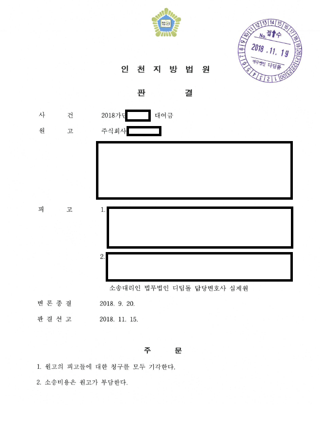

01사건 개요
폐유 공급 계약의 보증금 1억 5천만 원에 연대보증을 선 의뢰인이, 거래처가 폐업하자 보증금을 갚으라는 소송을 당한 사건입니다. 의뢰인은 직접 거래를 포기했고, 돈을 준 회사와 함께 찾은 다른 거래처에 보증금을 넘겨준 상태였습니다.
02쟁점
- 당사자들이 합의해 보증금을 다른 거래처로 넘긴 것으로 주채무가 소멸했는지
- 주채무가 소멸했는데도 보증서 한 장으로 연대보증 책임을 물을 수 있는지
03변호사가 한 일
- 보증금이 제3의 거래처로 넘어간 경위를 정리해, 주채무가 당사자들의 합의로 소멸했다고 주장했습니다.
- 의뢰인이 가져온 서류 가운데 오히려 불리하게 읽힐 수 있는 부분을 걸러 내고, 주장에 맞는 증거만 골라 제출했습니다.
04결과
변론 재개까지 거친 끝에 법원은 원고의 청구를 모두 기각했습니다.

이 사례는 원문을 요약해 정리한 것입니다. 사건 경과와 판결문 등 전체 내용은 로톡에 게시된 원문에서 볼 수 있습니다.
로톡에서 전문 보기 →05비슷한 상황이라면
연대보증서에 서명했더라도 주채무가 소멸했다면 보증 책임도 함께 사라질 수 있습니다. 돈이 오간 경위를 보여 주는 자료를 모아 두세요.
물품대금 소송을 당했는데 저도 받을 돈이 있습니다.
상대방에게 받을 채권이 있다면 상계항변으로 청구 금액을 줄일 수 있습니다. 1억 2천만 원 물품대금 청구를 상계항변으로 약 250만 원까지 줄인 사례가 있습니다.
전세 보증금을 못 받았는데 집주인과 연락이 안 됩니다.
주택임차권등기를 하고 보증금 반환 소송을 제기하면 됩니다. 집주인에게 서류가 전달되지 않으면 공시송달로 재판을 진행할 수 있고, 판결문이 있어야 강제집행을 할 수 있습니다.
관련 사건에서 이미 불리한 확정판결이 있는데 다툴 수 있나요?
청구의 근거가 다르면 다툴 여지가 있습니다. 친척 간 상속 관련 분쟁에서 앞선 확정판결상 반환해야 할 처지였지만, 상속개시 이후의 문제는 부당이득의 문제라는 점과 상계항변으로 승소한 사례가 있습니다.
평일 09:00–18:00 변호사가 직접 전화를 받습니다.
재판으로 자리에 없는 경우 로톡으로 상담을 신청하시거나 이메일로 문의해 주세요.
의뢰인이 특정되지 않도록 사실관계를 일부 줄이거나 바꾸어 정리했습니다. 사건의 결과는 구체적인 사실관계와 증거에 따라 달라질 수 있으며, 같은 결과를 보장하지 않습니다.